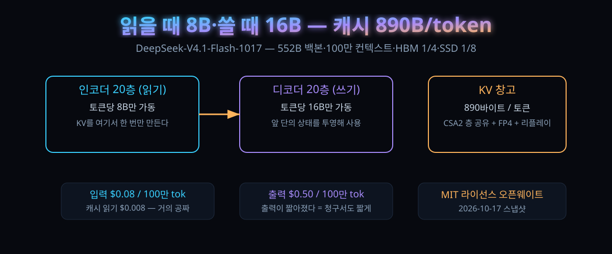

10월 17일 밤 뒤집힌 가격표 — 입력 89원·출력 555원에 100만 컨텍스트, 에이전트 시대의 '싼 지능' 기준선

결론부터. 지난밤 IT 업계의 화제는 새 '두뇌'가 아니라 새 '장부'였다. 지능의 값어치를 매기는 항목이 파라미터 수에서 캐시 메모리 효율로 넘어갔다는 사실이, 이 모델 하나와 그 가격표로 확정됐다.
딥시크가 10월 17일(현지) V4.1-Flash의 업데이트판 '1017'을 내놨다. 무게중심은 추론 성능보다 운영비다. 작업 시간을 줄이고 답장을 짧게 눌러, 같은 지능을 더 싸고 더 빨리 파는 데 방점을 찍었다.
해커뉴스에는 HF(691표·댓글 579개)와 OpenRouter(511표) 글이 동시에 올라와 하루 만에 합쳐졌다. 벤치 점수표보다 "왜 이 모델은 쓰다가 기분이 좋은가"를 설명하는 긴 경험담이 머리 댓글을 차지한 게 특징인 스레드였다.
30초 요약
| 항목 | 내용 |
|---|---|
| 무슨 일 | 딥시크가 10월 17일 V4.1-Flash의 스냅샷 '1017'을 공개. 추론·코딩·에이전트·시각 벤치가 전부 올랐다고 밝히며 MIT 라이선스 오픈웨이트로 배포 |
| 가장 큰 변화 | 출력 토큰 수와 작업 시간이 줄었다는 점. 성능·속도·비용을 같은 축에 올려놓는 '파레토 개선'을 이번 판의 공식 목표로 적었다 |
| 구조 한 줄 | 552B 백본인데 입력을 읽을 땐 8B, 답을 쓸 땐 16B만 움직이는 비대칭 설계(CE디코더-인코더). 앞 20층이 만든 캐시를 뒤 20층이 나눠 쓰는 식으로 계산량을 반으로 깎았다 |
| 캐시 혁명 | 토큰당 890바이트만 쓰는 KV 압축으로, 같은 길이 기준 캐시 창고를 직전 세대의 HBM 4분의 1·SSD 8분의 1로 축소 |
| 가격표 | 100만 토큰당 입력 0.08달러·출력 0.50달러·캐시 읽기 0.008달러, 컨텍스트 100만 토큰 (10월 18일 환율 1,440원 기준 약 입력 89원·출력 555원·캐시 읽기 9원) |
| 벤치 점프 | 터미널 벤치 4.0 31.2→42.3, 자동화 벤치 54.8→60.5, 프로그램벤치 20.3→29.1. 자체 비교 기준이라 타사 수치는 별도 확인 필요 |
| 바로 쓰는 법 | API 모델명을 deepseek-flash로. 오픈소스로 받으려면 컨텍스트 100만·max_tokens 256K 이상, 온도 1.0 설정이 권장값 |
1. 무엇이 터졌나
먼저 연표. 딥시크는 9월 10일 V4.1-Flash를 API에 올리며 "V4-Flash와 실험판 비전 모델을 퇴역시킨다"고 예고했다. 10월 17일은 그 계보의 첫 스냅샷이 붙은 날이다. 모델명이 곧 날짜(1017)이고, API에서는 계속 deepseek-flash라는 이름으로 봉사된다. 호출 프로그램을 손댈 일이 없다는 뜻이다.
공개된 건 가중치 전량이다. 라이선스는 MIT — 사실상 제약 없는 재사용 허가로, 1년 전 'V3의 교훈'을 인용하며 뒤늦게 MIT로 돌린 전례 위에 있다. '미국 밖 오픈웨이트가 표준 라이선스로 돌아왔다'는 흐름의 가장 최근 증거다.
기술 보고서(arXiv)의 자기소개는 담백한데 속은 복잡하다. 552B 백본에 196B를 더한 멀티모달 혼합전문가 모델, 컨텍스트 100만 토큰, 그리고 "KV 캐시 압장의 한계에 도전한다"는 부제. 이번 판이 지능 경쟁이 아니라 비용 경쟁임을 저자가 먼저 선언한 셈이다.
체감의 근거는 숫자 표에 있다. 지난 판(V4.1-Flash)과 비교하면 터미널 벤치 4.0에서 31.2→42.3, 프로그램벤치 20.3→29.1, 자동화 벤치 54.8→60.5. 코딩 계열도 깊은SWE 74.2→77.0, NL2Repo 65.4→68.2로 모두 위쪽이다. 표의 남의 집 열(K3, GLM-5.3, GPT-5.6 Sol, Opus 5)까지 함께 실어 '플래그십급과 한 링'이라는 그림을 완성했다.
2. 왜 대단한가
① 입력과 출력이 쓰는 두뇌를 아예 따로 뒀다
40층짜리 트랜스포머를 20+20으로 자른다. 앞 20층은 '인코더'로 입력을 훑는 일만, 뒤 20층은 '디코더'로 답을 만드는 일만 한다. 재치는 뒤쪽이 앞쪽의 최종 상태를 바로 이어받아 쓴다 — 매 층마다 키·값 캐시를 새로 만드는 대신 앞 단계의 산출물에서 투영해 꺼내는 식이다. 그래서 입력(프รี필) 구간은 토큰당 8B, 출력(디코드) 구간은 16B만 깨어난다. 에이전트 작업이 '읽기 9할, 쓰기 1할'이라는 통계의 역학에 정면으로 맞춘 설계다.
② KV 캐시를 토큰당 890바이트로 접었다
긴 대화가 비싼 이유는 연산보다 창고다. 읽은 것 전부를 다시 계산하지 않으려면 키·값(KV)을 쌓아둬야 하고, 그 창고(HBM·SSD) 값이 곧 단가다. 이 모델은 세 갈래로 창고를 쪼갠다. 층과 층 사이 캐시를 공유하는 압축 희소 어텐션 2(CSA2), 캐시를 4비트( FP4)로 눌러 저장하는 정밀도 실험, 그리고 '바운디드 리플레이' — 직전 창구간만 다시 굴려서 캐시를 복원하는 트릭이다. 합친 결과는 HBM 4분의 1, SSD 8분의 1. 보고서는 "성능 저하는 미미하다"고 자평한다.
③ 벤치보다 무서운 건 청구서다 — 그리고 캐시 읽기가 공짜에 가까워졌다
100만 토큰당 0.008달러. 원화 9원짜리 항목이다. 해커뉴스 한 개발자의 자기 고백이 이 숫자의 의미를 대신 설명해준다: 테스트가 5분 넘게 걸리면 캐시가 만료돼 통째 재계산됐고, 그 탓에 전체 사용량의 92%가 '다 쓴 것을 다시 읽는 값'이었다 — 상대 비용의 77%. 캐시 단가가 0에 가까우면 이런 낭비는 그냥 돈이 아니라 그냥 시간이 된다.
④ '스펙트럼이 좁다'가 강점으로 읽히는 첫 모델
머리 댓글의 요지는 이렇다: 벤치로 이기진 못해도 '느낌'이 이긴다. 추론 과정을 볼 수 있고, 사이버 심사라는 명목으로 갑자기 막히지 않고, 공급업체 응답 속도가 빨라서 에이전트가 자기 일을 끝낼 때까지 마냥 기다리지 않아도 된다. '과하게 똑똑한 척하지 않는다 — 개발자가 쓸 법한 코드를 그대로 내놓는다'는 평가까지 붙었다. 지능 상한이 아니라 예측 가능성이 상품이 된 첫 사례다.
3. 바로 써먹기
가장 먼저 확인할 표는 '같은 모델의 지난 판 대비'다. 자체 비교라는 단서를 달고 읽되, 방향성은 명확하다.
| 벤치(1017 / 지난 판) | 1017 | V4.1-Flash | 참고: Opus 5 |
|---|---|---|---|
| 터미널 벤치 4.0 | 42.3 | 31.2 | 51.8 |
| 자동화 벤치 v1.0.6 | 60.5 | 54.8 | 50.3 |
| 프로그램벤치 | 29.1 | 20.3 | 37.0 |
| 깊은SWE v1.1 | 77.0 | 74.2 | 74.0 |
| NL2Repo | 68.2 | 65.4 | 75.3 |
| 베이비비전 (도구 포함) | 92.5 | 89.6 | 94.1 |
자동화 벤치와 에이전트 시험에서는 플래그십으로 표기된 열까지 앞선다. 표 자체가 그 그림을 노리고 조판됐다.
# OpenAI 호환 호출 (모델명은 deepseek-flash로 통일)
curl https://api.deepseek.com/chat/completions \
-H "Authorization: Bearer $DEEPSEEK_API_KEY" \
-d '{"model": "deepseek-flash", "max_tokens": 262144}'자체 호스팅 쪽 권장값은 컨텍스트 창 100만, max_tokens 256K 이상, 온도 1.0·top_p 1.0이다. 채팅 템플릿을 넣지 않는 대신 '딥시크 레시피'라는 루스+파이썬 패키지를 함께 내놨다 — Messages·Chat Completions·Responses 요청을 모델 고유의 대화 포맷으로 변환하고, 추론 과정과 도구 호출과 이미지를 포함한 출력 역변환까지 책임진다. 모델 자체는 내가 돌리고, 껍데기만 빌려 쓰는 구조다.
한국 개인 개발자 관점에서 견적을 다시 쓰면 이렇다. 10/18 환율(1,440원)로 입력 100만 토큰당 약 89원, 출력 약 555원. 해커뉴스에서 한 사용자가 어릴 적 쉐어웨어 게임을 리눅스용 루스트로 이식한 실험 두 번의 토큰 총액이 약 3유로였다. "5시간 일하고 10달러"라는 다른 댓글과 함께 놓으면, 지금 이 가격대가 어떤 작업 세계를 여는지 감이 온다.
로컬 실행은 아직 먼 이야기다. 백본만 552B — 스레드에서도 "이건 플래그십치고 작은 모델이 아니다, 스파크 몇 대는 각오해야 한다"는 대화가 오갔다. 이 모델의 존재 이유는 내 PC가 아니라 내 에이전트가 며칠 동안 굴리는 일감이다.
4. 해외 반응 쟁점
'느낌 좋은 모델' 논쟁. 가장 많은 공감을 산 댓글은 벤치 열위(GPT-5.6 Sol·Opus 5.5 아래)를 인정하면서도 세 가지를 들었다: 공급업체별 토큰 속도와 첫 토큰 지연, 추론 과정 공개, 무작위 차단 없는 개방성. 이에 대한 반대편은 정량 실험 하나였다. 같은 C++ 게임엔진 코드베이스 200개 파일 리뷰 대결 — 이 모델은 20분, GPT 6.1 Sol은 4분 30초에 더 많은 문제를 찾았고 "채점하면 6.5 대 7.5"라는 결론. 재밌는 건 그 실험자도 "생성 속도는 감탄스러웠다"를 따로 적었다는 점이다.
캐시 만료로 새는 돈. 스레드에서 실질적으로 가장 많이 저장된 조언이다: 앤트로픽 계열 캐시 유효시간은 5분, 테스트가 그보다 오래 걸리면 재개 시점에 통째 미스. "나는 Claude가 테스트를 돌리기 시작하면서 요금이 수요일이면 바닥났다"는 고백에, 직접 테스트를 떼니 "주말에 뭘 자동화하지 고민하게 됐다"는 회신이 붙었다. 캐시 유지 기술을 스킬로 만들어 사용량을 크게 줄였다는 이도 있었다.
속도 전문 공급업체의 등장. 공식 API보다 캐시 읽기를 공짜에 가깝게 파는 신생 업체들이 언급됐다 — 실제로 이 모델은 10곳이 100만 토큰당 0.08~0.30달러에 경쟁 공급 중이고 최고 속도는 초당 291토큰까지 관측된다. "읽기의 98% 이상이 캐시 적중이면 캐시 단가가 곧 총단가"라는 계산법이 통용되기 시작한 건, 이 모델의 캐시 구조 변화와 같은 뿌리에서 자랐다.
그래도 남는 의문 — '왜 굳이 플래시인가'. 몇몇은 "플래그십급 점수를 내는 모델이 왜 중간 단계로 포장돼 있느냐"고 따진다. 공식 설명은 비용·속도·작업 시간의 삼각형인데, 스레드 한복판에서는 "차라리 작은 플래시 모델이 다시 나오면 좋겠다 — 로컬은 아직 무리"라는 주문이 돌아다닌다.
5. 마시기 전 주의
첫째, 벤치 표의 상대열은 전부 딥시크의 선택이다. 어떤 하네스(터미널 벤치는 Claude Code, 깊은SWE는 Mini-SWE-V2)를 씌웠는지 각주까지 달려 있으니, 그 기준 그대로 재현하기 전엔 표의 순위를 내 평가로 쓰지 말 것. 둘째, '출력이 짧아졌다'는 개선은 양날의 검이다. 짧아진 답이 정보량 감소라면 에이전트 체인에서 재질문이 늘어난다 — 실제로 짧은 답을 선호하는 팀과 긴 설명을 선호하는 팀의 체감은 엇갈린다. 셋째, 자체 호스팅은 컨텍스트 표기(100만)와 max_tokens 권장값(256K 이상)이 아니라 실제 메모리 적재량이 문제다 — 오픈웨이트라는 사실과 개인 기기 실행 가능은 다른 문장이다. 넷째, 가격표는 공급업체마다 2~4배씩 벌어진다. 최저가만 쫓으면 지연이 늘고, 최저 지연만 쫓으면 단가가 뛴다.
한 줄로 접자. 이번 스냅샷의 발명은 지능이 아니라 회계다. '읽는 값'을 4분의 1, '쌓아두는 값'을 8분의 1로 접어 넣은 순간, 에이전트 상주 비용의 하한이 통째로 내려앉았다. 모델 선택의 질문이 '얼마나 똑똑한가'에서 '며칠 굴리면 얼마인가'로 옮겨간 자리 — 2026년 하반기의 기준선은 바로 이 가격표다.
바로 가기
- HF 모델 카드 — DeepSeek-V4.1-Flash-1017
- 기술 보고서 — Pushing the Limits of KV Cache Compression
- 해커뉴스 발표 스레드 (691표·579댓글)
같이 읽기
10월의 두 번째 오픈웨이트 폭탄 — 샤오미 MiMo 2.6이 '가성비 플래그십'을 노리는 계산법 — 같은 주 중국발 오픈웨이트 경쟁의 다른 한 장. 이번 잔이 '가격표의 정치학'이라면 저쪽은 '모델 설계의 정치학'이다.
활성 파라미터 4.4%의 설계학 — MoE가 '큰데 싼' 모델로 가는 법 — 552B가 토큰당 8B로 도는 원리를 거꾸로부터 본 10월 4일 잔.